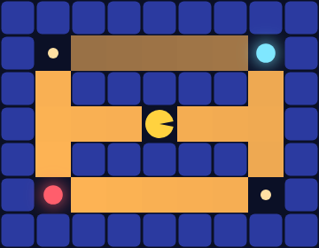

GenMLX Agents
Inferring minds in the maze.
This book ports the curriculum of Modeling Agents with Probabilistic Programs (agentmodels.org) to GenMLX — and tells the whole story inside one environment: a Pac-Man maze.
The thesis runs through every chapter: an agent is a generative function, and
inference is a pluggable, orthogonal axis. A policy is a gen function that
traces an action; planning is running it; inverse planning — asking what an agent
wanted or believed — is inference over that same function. Exact enumeration,
Monte-Carlo, gradients, or an LLM can each play the role of the inference engine
without the model changing a line.
Why Pac-Man? Because almost the entire arc — Markov decision processes, gridworlds, partial observability, reinforcement learning, inverse reward inference, cognitive biases, and multi-agent games — is sequential decision-making on a grid under a utility function, and that is exactly Pac-Man. Pellets are rewards; the power pellet is a large, delayed payoff; a ghost you cannot see through a wall is hidden state. One maze gives the book a single visual language, and every figure in it is a live capture of real GenMLX inference, not a hand-drawn diagram.
Honest scope. This is Pac-Man-primary, not Pac-Man-only. A ghost is modeled as POMDP latent state — a belief over where it is — never as part of the planner’s state vector, so planning stays tractable. The probabilistic- programming primer and the signaling material stay deliberately plain; the adversarial multi-ghost game drops to classical tree search and is labeled as such. Where the maze illuminates, we use it; where it would obscure, we don’t.
How to read this book
Every chapter shows runnable GenMLX code, lifted verbatim from a file under
examples/agentmodels/, and every figure is regenerated from an actual rollout or
posterior. The substrate is one namespace — genmlx.agents.pacman — a thin layer
over the genmlx.agents library. Start with the legend, which fixes
the maze’s visual vocabulary once.
Running the code
bun run --bun nbb examples/agentmodels/<chapter>.cljs
The Pac-Man Maze: A Legend
Every chapter draws on one environment, compiled from ASCII art by
genmlx.agents.pacman. The vocabulary is fixed here so no chapter has to redefine
it.
| Glyph | Cell | Role | Reward | Meaning |
|---|---|---|---|---|
% / # | :wall | wall | — | impassable |
| (space) | :empty | floor | — | open corridor |
. | :pellet | pellet | +10 | small reward, terminal cache |
o | :power | power pellet | +50 | large reward, terminal cache |
F | :fruit | fruit | +100 | highest reward, terminal cache |
P | :empty | Pac-Man start | — | compiles to floor; start position |
G | :empty | ghost seed | — | POMDP latent, never planner state |
Every step costs −1 (the :timeCost), so a rational Pac-Man trades reward
against distance.
Coordinates and actions
A maze is a vector of rows, top row first. For a cell at column x, row y, the
dense state index is s = x + W·y. Actions are :left (−x), :right (+x), :up
(−y, toward the top), and :down (+y).
The load-bearing decision
Pellets, power pellets, and fruit are terminal-utility caches — the agentmodels
“restaurant” pattern — not a consumed food set carried in the state. Ghosts are
POMDP latent state — a belief over which cell they occupy — not added to the
planner’s state vector. Both choices keep the planner’s state the single dense
index s = x + W·y, so dense value iteration never faces the food-set / ghost-count
explosion that classic Pac-Man has. This is what lets the whole genmlx.agents
library apply to a Pac-Man maze unchanged.
The canonical mazes
classic-maze— a 9×7 ring with four caches at the corners and Pac-Man at the centre; all four are equidistant, so an optimal Pac-Man’s choice is pure value.corridor— a 1-D hallway to a single power pellet (the minimal teaching MDP).two-caches— a vertical corridor with a pellet north and a power pellet south (the inverse-planning setup: the first step reveals the preference).haunted-maze— a hidden-state maze whose true rewarding cache is revealed only at a signpost floor cell (the POMDP chapter).
The maze, rendered
Every figure in this book is a live capture of real GenMLX inference, produced by
bin/agents-book-figures. Here is classic-maze itself — the floor shaded by the
agent’s value function V(s) (brighter = higher value), Pac-Man at the centre, and
the four corner caches (pellet, cyan power pellet, red fruit):

And the optimal Pac-Man rolling out from the centre to the highest-value cache — the fruit — one frame per step:

Probabilistic Programming in Five Minutes
Ports agentmodels.org 1-introduction.md (taster snippets), 2-webppl.md (language primer).
(Chapter content is authored under the book’s content epics. Code is lifted verbatim from a runnable examples/agentmodels/*.cljs; every figure is a live capture from the Pac-Man environment — see the authoring contract.)
The Pac-Man scenario
coin() = does a ghost turn left or right at a junction (flip). geometric(p) = how many cells Pac-Man travels before a random ghost blocks it (recursive sampler). categorical = which of 4 directions Pac-Man picks. condition = ‘given Pac-Man reached the pellet, what path did it take?’ (the two-heads conditioning example reframed as a surviving trajectory).
What this chapter builds on
- genmlx code: exists — test/genmlx/agentmodels_ch01_intro_test.cljs (geometric P(n=k)=0.5^(k+1), E[n]=1) and test/genmlx/agentmodels_ch02_webppl_test.cljs (ERP, multivariateGaussian, twoHeads/moreThanTwoHeads conditioning P(first=H|>=2)=0.75, forward positionDist). Examples: examples/agentmodels/ch01_intro.cljs + ch02_webppl.cljs. dist/* primitives + p/generate/condition. No new code.
Live figures (planned)
- ch01-geometric-bars.png — posterior bar chart over trajectory length (presentation/dist->bars rendered)
- ch01-conditioning.png — reuse template figures/conditioning.png concept, redrawn as surviving-vs-all maze paths
- ch01-position-gaussian.png — 2D Gaussian scatter of a noisy ghost position estimate
Agents as Probabilistic Programs: One-Shot Choice at a Junction
Ports agentmodels.org 3-agents-as-programs.md.
(Chapter content is authored under the book’s content epics. Code is lifted verbatim from a runnable examples/agentmodels/*.cljs; every figure is a live capture from the Pac-Man environment — see the authoring contract.)
The Pac-Man scenario
Pac-Man at a 4-way junction: actions = up/down/left/right, transition returns the resulting cell (deterministic) or a ghost-perturbed distribution (stochastic), utility high for pellet cells / negative for ghost cells. maxAgent = one-step-lookahead Pac-Man; inferenceAgent = planning-as-inference (‘imagine we observe Pac-Man ate the pellet — which way did it go?’); softMaxAgent = a noisy human player. Monty-Hall exercise → which of three corridors hides the ghost.
What this chapter builds on
- genmlx code: exists — src/genmlx/agents/helpers.cljs implements factor-dist (WebPPL factor as defdist) and softmax-action (Boltzmann policy via dist/categorical, delegates to exact/categorical-argmax at alpha=Inf); verified in test/genmlx/agentmodels_helpers_test.cljs (factor score injection additive, softmax matches hand-computed reference). The agent-as-GF policy (gen [s] (trace :action (softmax-action alpha Q[s]))) is the core contract. No new code for the concepts; one small worked junction example to write.
Live figures (planned)
- ch02-junction.png — static maze junction with 4 candidate next-cells annotated with utility
- ch02-softmax-bars.gif — action-probability bar chart sweeping alpha from 0 to Inf (presentation bars over a sweep)
- ch02-planning-as-inference.png — diagram: condition on outcome → posterior over action
Sequential Decisions: MDPs and the Maze
Ports agentmodels.org 3a-mdp.md.
(Chapter content is authored under the book’s content epics. Code is lifted verbatim from a runnable examples/agentmodels/*.cljs; every figure is a live capture from the Pac-Man environment — see the authoring contract.)
The Pac-Man scenario
Integer-line MDP = a 1-D Pac-Man corridor with a pellet at the far end and a per-step time cost. Restaurant-Choice gridworld = a Pac-Man maze with pellet caches of different values as terminal cells. Show act/expectedUtility mutual recursion, terminal states, and the exponential-blowup → dp.cache (memoization) lesson as planning-step count grows.
What this chapter builds on
- genmlx code: exists — src/genmlx/agents/agent.cljs (bellman-step, value-iteration, value-iteration-lazy, recursive-eu memoized via exact/with-cache, make-mdp-agent, simulate-mdp); src/genmlx/agents/worlds.cljs (line-mdp); src/genmlx/agents/gridworld.cljs (parse-grid, build-mdp, transition-tensor). Tests: test/genmlx/agentmodels_worlds_test.cljs (line S=7 rollout 0→6) + agentmodels_slice_test.cljs (3×3 VI Q/V + rollout). The dp.cache vs no-cache runtime-scaling demo is the agent.cljs two-path (tensor VI vs recursive-eu) story — a small timing harness to write for the figure.
Live figures (planned)
- ch03-corridor.gif — Pac-Man walking the 1-D line MDP to the goal pellet
- ch03-gridworld-policy.png — maze with optimal-policy direction arrows per cell (render.cljs overlay)
- ch03-runtime-scaling.png — bar chart: recursive EU runtime with vs without with-cache memoization
Gridworld in Depth: Stochastic Transitions and Q-Values
Ports agentmodels.org 3b-mdp-gridworld.md.
(Chapter content is authored under the book’s content epics. Code is lifted verbatim from a runnable examples/agentmodels/*.cljs; every figure is a live capture from the Pac-Man environment — see the authoring contract.)
The Pac-Man scenario
Hiking MDP as a Pac-Man maze: West/East peaks = high-value pellet clusters, the Hill hazard row = a ghost corridor that ends the episode with negative reward, transitionNoiseProbability = a slippery maze floor (orthogonal slip). Deterministic Pac-Man cuts the short risky route; the stochastic agent detours the long safe route. Q-value heatmap shows per-cell action values; alpha sweep tunes player noisiness.
What this chapter builds on
- genmlx code: exists — src/genmlx/agents/worlds.cljs (hike-mdp 5×5 noise 0.0/0.1, big-hike-mdp 6×6); gridworld.cljs transition-tensor implements orthogonal-slip noise; agent.cljs value-iteration yields Q for the heatmap; alpha lives in softmax-action (helpers.cljs). Verified in test/genmlx/agentmodels_worlds_test.cljs (deterministic bottom-row cut vs stochastic top detour, both reach East peak). Trajectory-length histogram + Q-value-overlay rendering to write for figures (presentation.cljs env->trajectory accepts an MLX V for value shading).
Live figures (planned)
- ch04-hike-deterministic.gif — short risky route past the ghost corridor
- ch04-hike-stochastic.gif — long safe detour under slippery floor
- ch04-qvalue-heatmap.png — per-cell action Q-values overlaid on the maze (presentation V-shading + render.cljs)
- ch04-trajectory-length-hist.png — histogram of rollout lengths under stochastic transitions
Hidden State: POMDPs and Belief Over Ghosts
Ports agentmodels.org 3c-pomdp.md.
(Chapter content is authored under the book’s content epics. Code is lifted verbatim from a runnable examples/agentmodels/*.cljs; every figure is a live capture from the Pac-Man environment — see the authoring contract.)
The Pac-Man scenario
Ghost positions are the canonical hidden state — Pac-Man can’t see ghosts through walls and maintains a belief distribution over their locations, updating it when a ghost enters the observable neighborhood. Restaurant-open/closed latent maps to ‘is this corridor safe?’. Signpost reveal and adjacency-reveal both shown. QMDP belief-directed exploration and rational replanning when a corridor is found blocked.
What this chapter builds on
- genmlx code: exists — src/genmlx/agents/belief.cljs (filter-step differentiable Bayes update, tensor-update-belief, obs-id-tensor, belief<->vec); src/genmlx/agents/pomdp.cljs (make-pomdp-agent QMDP [W,S,A] belief-Q, simulate-pomdp, fused-simulate-pomdp); src/genmlx/agents/pomdp_env.cljs (restaurant-gridworld signpost, restaurant-pomdp adjacency-reveal 2^k worlds). Tests: agentmodels_pomdp_test.cljs (belief snaps at signpost, QMDP reaches goal), agentmodels_pomdp_adjacency_test.cljs (detour when preferred closed), agents_fused_pomdp_test.cljs (S×W obs-tensor parity). No new agent code; ghostbusters belief-heatmap browser renderer is the figure gap.
Live figures (planned)
- ch05-belief-heatmap.gif — belief over ghost cells concentrating as Pac-Man senses (cs188 ghostbusters shade → ghostbusters.html canvas extension, or ANSI fallback)
- ch05-pomdp-graph.png — POMDP dependency graph (s,a,o,u,b) authored figure
- ch05-signpost-reveal.gif — belief snaps to revealed goal at the signpost cell
- ch05-adjacency-detour.gif — Pac-Man detours after observing a corridor closed
Learning the Maze: Bandits, Thompson Sampling, and PSRL
Ports agentmodels.org 3d-reinforcement-learning.md (also the bandit arm of 3c).
(Chapter content is authored under the book’s content epics. Code is lifted verbatim from a runnable examples/agentmodels/*.cljs; every figure is a live capture from the Pac-Man environment — see the authoring contract.)
The Pac-Man scenario
Multi-armed bandit = Pac-Man repeatedly choosing among corridors, tracking which yields more fruit (cumulative regret vs random baseline). PSRL on a gridworld = Pac-Man learning an unknown maze: the unknown reward function is the unknown fruit layout; each episode it samples a hypothesized layout, plans optimally, then updates beliefs from what it actually found. The lava-world variant shows uncertainty-driven exploration avoiding danger.
What this chapter builds on
- genmlx code: exists — src/genmlx/agents/pomdp.cljs (make-bandit-agent Thompson/softmax, update-arm Beta-Bernoulli, simulate-bandit + simulate-bandit-batched [N,K] no per-step mx/item); src/genmlx/agents/pomdp_env.cljs (bandit-pomdp); src/genmlx/agents/worlds.cljs (lava-world). Tests: agentmodels_psrl_test.cljs (posterior concentrates P>=0.99, final-episode zero regret, beats baseline), agentmodels_psrl_lava_test.cljs (reduces lava exposure across 6 seeds). Example examples/agentmodels/psrl.cljs. PSRL gridworld loop reuses agent.cljs make-mdp-agent per sampled model.
Live figures (planned)
- ch06-bandit-regret.png — cumulative-regret line, Thompson/softmax vs random baseline
- ch06-psrl-episodes.gif — concatenated per-episode Pac-Man trajectories getting more direct to fruit
- ch06-lava-avoidance.gif — PSRL Pac-Man learning to skirt the lava gap
- ch06-arm-posteriors.gif — Beta posteriors over corridor fruit-rates sharpening (presentation/bandit-bars)
Reasoning About Agents: Inverse Reinforcement Learning
Ports agentmodels.org 4-reasoning-about-agents.md.
(Chapter content is authored under the book’s content epics. Code is lifted verbatim from a runnable examples/agentmodels/*.cljs; every figure is a live capture from the Pac-Man environment — see the authoring contract.)
The Pac-Man scenario
An observer watches Pac-Man’s path and infers which pellet cache it values most. One leftward step makes the near cache the MAP goal; symmetric caches stay unidentifiable until paths diverge — motivating active learning and multiple trajectories. Joint inference of utility + softmax noise alpha + time cost. POMDP-IRL adds inferring Pac-Man’s beliefs about hidden ghosts from its detours.
What this chapter builds on
- genmlx code: exists — src/genmlx/agents/inverse.cljs (goal-agents, action-loglik via p/assess on the goal policy, normalize-logs, posterior-sequence batched [G,S,A], observe-rollout). The likelihood IS p/assess — no bespoke likelihood code. Tests: agentmodels_irl_test.cljs (Eq 1 utility-table inference, donut MAP after one step, Veg/Noodle unidentifiable, soft-alpha washout, POMDP-IRL Eq 2 factorSequence, joint alpha+utility, deterministic via with-redefs of rng/fresh-key) + agentmodels_hike_irl_test.cljs (Big-Hiking S=36, posterior flat over shared prefix then concentrates P>0.99). Examples irl.cljs, pomdp_irl.cljs, hike_irl.cljs.
Live figures (planned)
- ch07-observed-path.png — the trajectory to be explained, on the maze
- ch07-posterior-marginals.gif — prior→posterior bars over favorite cache as steps accrue (presentation/marginals->bars)
- ch07-single-step.png — one-action [3,1]→[2,1] conditioning illustration
- ch07-multiple-trajectories.png — two side-by-side paths sharpening the posterior
Cognitive Biases and Bounded Rationality (Why Softmax Isn’t Enough)
Ports agentmodels.org 5-biases-intro.md.
(Chapter content is authored under the book’s content epics. Code is lifted verbatim from a runnable examples/agentmodels/*.cljs; every figure is a live capture from the Pac-Man environment — see the authoring contract.)
The Pac-Man scenario
Expository: a Pac-Man player who systematically avoids power pellets near ghosts, or keeps returning to a low-value corridor, shows SYSTEMATIC (not random) deviation from optimal play — something softmax noise alone cannot explain. Motivates extending the agent model with biases (time inconsistency, myopia) so inverse planning recovers true preferences.
What this chapter builds on
- genmlx code: exists — no-code narrative chapter (mirrors agentmodels 5-biases-intro which has no models). Sets up the biased-planner machinery in src/genmlx/agents/biased_planners.cljs covered in following chapters. Includes the ‘two uses of decision models’ table (authored).
Live figures (planned)
- ch08-systematic-vs-noise.png — two maze paths: a noisy wobble vs a systematic dominated detour (static, authored from real rollouts)
- ch08-two-uses-table.png — Table 1 (practical problem-solving vs learning preferences) authored figure
Time Inconsistency I: Hyperbolic Discounting in the Maze
Ports agentmodels.org 5a-time-inconsistency.md.
(Chapter content is authored under the book’s content epics. Code is lifted verbatim from a runnable examples/agentmodels/*.cljs; every figure is a live capture from the Pac-Man environment — see the authoring contract.)
The Pac-Man scenario
Hyperbolic discounting = Pac-Man increasingly tempted by a NEARBY power pellet even while heading to a higher-value distant pellet. Naive Pac-Man gets diverted to the close pellet; Sophisticated Pac-Man pre-commits to a route that avoids passing the tempting pellet, paying extra steps. Immediate vs delayed utility = eat a pellet now (small score) vs a power pellet enabling ghost-eating later (large delayed score). Discount-curve comparison D=1/2^t vs 1/(1+2t).
What this chapter builds on
- genmlx code: exists — src/genmlx/agents/biased_planners.cljs (delta hyperbolic 1/(1+kd), bias->perceived-delay :naive=inc / :sophisticated=const-0, biased-eu/biased-eu-inf, make-biased-mdp-agent, simulate-biased-mdp re-planning each step, planned-rollout = believed trajectory, restaurant-mdp + restaurant-temptation-mdp). Tests: agentmodels_biased_planners_test.cljs (delta limit cases, restaurant-temptation naive vs sophisticated action differences, limit recovery k=0 matches standard agent at alpha=1 and Inf). Discount-curve plot to write for figure.
Live figures (planned)
- ch09-discount-curves.png — exponential vs hyperbolic discount-curve line chart
- ch09-naive-detour.gif — Naive Pac-Man diverting to the tempting near pellet
- ch09-sophisticated-precommit.gif — Sophisticated Pac-Man taking the avoidance route
Time Inconsistency II: Procrastination and Changing Plans
Ports agentmodels.org 5b-time-inconsistency.md.
(Chapter content is authored under the book’s content epics. Code is lifted verbatim from a runnable examples/agentmodels/*.cljs; every figure is a live capture from the Pac-Man environment — see the authoring contract.)
The Pac-Man scenario
Procrastination MDP = Pac-Man must eat a power pellet before a deadline or lose the level (work/wait actions, deadline T, diminishing reward). Naive hyperbolic Pac-Man keeps deferring the grab — always ‘next step’ — until forced or failing; Sophisticated commits. dynamicActionExpectedUtilities shows EU of each action changing with position and subjective delay along the trajectory. Discount-rate sweep finds the threshold above which Pac-Man never acts.
What this chapter builds on
- genmlx code: exists — src/genmlx/agents/biased_planners.cljs (procrastination-mdp time-augmented wait/work MDP, biased-eu with perceived-delay branching, planned-rollout for the believed-vs-actual divergence). Tests: agentmodels_biased_planners_test.cljs (procrastination preference reversal — naive procrastinates, sophisticated commits). The dynamic-EU-along-trajectory overlay (per-step Q at the agent’s current delay) is presentation-layer work to write for the figure.
Live figures (planned)
- ch10-procrastination-graph.png — work/wait transition graph authored figure
- ch10-dynamic-eu.gif — per-step action-EU overlay changing as Naive Pac-Man defers (presentation V-shading per delay)
- ch10-discount-threshold.png — final-state / time-elapsed vs discount rate k sweep
Bounded Agents: Reward-Myopia and Update-Myopia
Ports agentmodels.org 5c-myopic.md.
(Chapter content is authored under the book’s content epics. Code is lifted verbatim from a runnable examples/agentmodels/*.cljs; every figure is a live capture from the Pac-Man environment — see the authoring contract.)
The Pac-Man scenario
Reward-myopic Pac-Man only looks C_g steps ahead — greedy about nearby pellets, may miss optimal routes to power pellets (epsilon-greedy-like on bandits). Update-myopic Pac-Man assumes belief updates stop after C_m steps: with hidden ghosts observable only by moving adjacent, a C_m=1 Pac-Man won’t plan a route that first reveals ghost positions then exploits the info — the Restaurant-Search failure mode. Runtime: update-myopic scales better than full POMDP.
What this chapter builds on
- genmlx code: exists — src/genmlx/agents/biased_planners.cljs (reward-myopia C_g and update-myopia C_m bounds in the delay-indexed recursion, line-mdp reward-myopia corridor, make-biased-pomdp-agent with C_m bound, simulate-biased-pomdp, voi-world value-of-information walk-and-check POMDP). Limit recovery biased(C_g=Inf) matches standard agent — agentmodels_biased_planners_test.cljs. Bandit reward-myopia regret-ratio + runtime-scaling timing harness to write for figures.
Live figures (planned)
- ch11-rewardmyopic-bandit.png — average-reward-near-optimal-despite-myopia bar/line
- ch11-voi-failure.gif — update-myopic Pac-Man avoiding the info-revealing detour (voi-world)
- ch11-runtime-scaling.png — runtime vs trials: update-myopic vs optimal POMDP line chart
Joint Inference of Biases and Preferences I: Procrastination and No-Exploration
Ports agentmodels.org 5d-joint-inference.md.
(Chapter content is authored under the book’s content epics. Code is lifted verbatim from a runnable examples/agentmodels/*.cljs; every figure is a live capture from the Pac-Man environment — see the authoring contract.)
The Pac-Man scenario
A Pac-Man that never explores an unknown corridor: the Optimal model explains it as strongly preferring the known reward; the Possibly-Reward-myopic model explains it as greedy (low C_g). The procrastination scenario: a Pac-Man that must hit a switch before a countdown — Naive hyperbolic Pac-Man keeps deferring, while the Optimal-only model wrongly infers the switch reward is tiny + noise is huge. Online posteriors revise sharply when the task finally completes.
What this chapter builds on
- genmlx code: exists — joint inference over agent TYPE and parameters (U, alpha, b0, k, C). Tests: test/genmlx/agentmodels_5d_joint_test.cljs (optimal explains waiting via E[reward]~0.530 + E[alpha]~457.5, predictWorkLastMinute~0.006; discounting via E[discount]~2.63, predict~0.216; posterior revision on completion E[reward]>2.0 and E[alpha] collapses >100x; online sequence 9 entries). Example examples/agentmodels/joint_5d_inference.cljs. Built on biased_planners.cljs + inverse.cljs p/assess + standard inference backends.
Live figures (planned)
- ch12-procrastination-timeseries.gif — posterior E[reward], E[alpha], E[discount], predict-work over t=0..9, optimal vs discounting (presentation bars per step)
- ch12-noexplore-horizon.png — E[chocolate utility] and E[C_g] vs time horizon 2..10, optimal vs reward-myopic
- ch12-completion-revision.png — before/after posterior bars when the switch is finally hit
Joint Inference II: Was That Detour Noise, Bias, or Taste?
Ports agentmodels.org 5e-joint-inference.md.
(Chapter content is authored under the book’s content epics. Code is lifted verbatim from a runnable examples/agentmodels/*.cljs; every figure is a live capture from the Pac-Man environment — see the authoring contract.)
The Pac-Man scenario
A Pac-Man that passes near a power pellet but eats a regular pellet first could be (a) noisy, (b) a Naive hyperbolic discounter tempted by the immediate pellet, or (c) genuinely preferring regular pellets. Joint inference over all three from repeated plays: observing the same ‘mistake’ three times collapses the noise explanation. Expanding the preference space (DonutN != DonutS, positive time cost) lets alternative tastes compete with discounting. Uses the full [immediate, delayed] restaurant-twin geometry.
What this chapter builds on
- genmlx code: exists — full joint model (discount in {0,1}, sophisticatedOrNaive, vegMinusDonut, donutTempting summary stats), conditioning on Naive path once vs three times, two-donut and positive-timeCost competing explanations. Tests: test/genmlx/agentmodels_5e_joint_test.cljs ([imm,del] 6×8 grid 48+4 twins=52 states, 2-step stay delivers delta(d)*imm + delta(d+1)*del disU formula, joint k+utility inference) + agentmodels_biased_inverse_test.cljs (naive EU(a0)=8/3 tie, soph=2.5, pi_naive(a0)=0.5 vs pi_soph(a0)=0, prior decomposition via p/assess on {:bias} alone, posterior concentrates on :sophisticated). Examples restaurant_joint_inference.cljs, biased_inverse.cljs.
Live figures (planned)
- ch13-three-explanations.png — the ambiguous detour on the maze with three candidate causes
- ch13-once-vs-thrice.gif — posterior bars for sophisticatedOrNaive/discount/alpha after 1 vs 3 identical observations
- ch13-competing-tastes.png — prior vs posterior bars over vegMinusDonut, donutNGreaterDonutS, timeCost
Efficient Inference: One Model, Many Backends
Ports agentmodels.org 6-efficient-inference.md, 6a-inference-dp.md, 6b-inference-sampling.md, 6c-inference-rl.md.
(Chapter content is authored under the book’s content epics. Code is lifted verbatim from a runnable examples/agentmodels/*.cljs; every figure is a live capture from the Pac-Man environment — see the authoring contract.)
The Pac-Man scenario
The same Pac-Man goal-inference problem solved four ways that MUST agree: (6a) DP — value iteration over maze states == faithful recursive EU; (6b) sampling — exact enumeration vs importance sampling vs Metropolis-Hastings over the joint goal-inference GF; (6c) RL/gradient — gradient and amortized utility recovery through the differentiable planner. Demonstrates inference is a pluggable orthogonal axis over the agent-GF.
What this chapter builds on
- genmlx code: exists — src/genmlx/agents/differentiable.cljs (build-diff-mdp, diff-q via value-iteration-lazy, action-loglik-loss, recover-params Adam, loss-at). agent.cljs value-iteration vs recursive-eu certified equal. Tests: test/genmlx/agentmodels_ch06_pluggable_inference_test.cljs (VI==recursive-EU, enumerate/IS/MH agreement cross-checked by independent posterior-sequence oracle, gradient/amortized recovery) + agentmodels_diff_learn_test.cljs (diff-reward reconstructs R, lazy Q matches eager 1e-5, fix-alpha-learn-utilities + fix-utilities-learn-alpha to likelihood-equivalence). Example examples/agentmodels/ch06_pluggable_inference.cljs. The 6a/6b/6c stubs in agentmodels are fleshed out here.
Live figures (planned)
- ch14-backend-agreement.png — same posterior from enumerate/IS/MH overlaid as bars
- ch14-dp-value-iteration.gif — V(s) sweeps converging across the maze (cs188 rl.cljs value-iteration display → canvas)
- ch14-gradient-recovery.png — loss-history curve recovering planted utilities + alpha
Multi-Agent Models: Coordination, Adversaries, and Signaling
Ports agentmodels.org 7-multi-agent.md.
(Chapter content is authored under the book’s content epics. Code is lifted verbatim from a runnable examples/agentmodels/*.cljs; every figure is a live capture from the Pac-Man environment — see the authoring contract.)
The Pac-Man scenario
Schelling coordination = two Pac-Men trying to meet at a junction without communicating, the popular corridor as the focal point; recursive theory-of-mind at increasing depth predicts convergence. Adversarial = Pac-Man vs ghost planning ahead via simulate/act alternation (minimax/expectimax) on the cs188 GameState. RSA signaling = Pac-Man signaling ghost positions to a partner through movement patterns (literal vs pragmatic listener/speaker).
What this chapter builds on
- genmlx code: exists — Schelling + focal-point amplification + RSA scalar implicature shipped. Tests: test/genmlx/agentmodels_multi_agent_test.cljs (bob(0)=0.55 prior, focal amplification strictly increasing, alice(4)>=0.83; exact ~ importance-sampling tol 0.05; L0/S1/L1 RSA, ‘some’ implies not-all, pragmatic posteriors analytically verified). Example examples/agentmodels/multi_agent.cljs. Adversarial Pac-Man tree search ALREADY exists in cs188.agents (minimax/alpha-beta/expectimax over generate-successor, proven alpha-beta==minimax) — partial: bridging cs188.agents adversarial search into a genmlx multi-agent GF narrative is the one must-write piece.
Live figures (planned)
- ch15-schelling-convergence.png — meeting-probability vs recursion depth line chart
- ch15-adversarial-pacman.gif — Pac-Man vs ghost expectimax self-play (cs188 play.cljs / web canvas)
- ch15-rsa-implicature.png — literal vs pragmatic listener posterior bars
Quick-Start Guide to the genmlx.agents Library
Ports agentmodels.org 8-guide-library.md.
(Chapter content is authored under the book’s content epics. Code is lifted verbatim from a runnable examples/agentmodels/*.cljs; every figure is a live capture from the Pac-Man environment — see the authoring contract.)
The Pac-Man scenario
A tutorial-style tour building each agent on Pac-Man worlds: line MDP = corridor; gridworld with walls = maze; named features (gold/silver) = pellets/power-pellets with different utilities; line POMDP with signpost = a corridor with a hidden ghost (treasureAt3 → ghostAt[x,y]); custom RANDOM and EPSILON-GREEDY policy GFs. Shows the minimal agent contract (:act + :params) and the four constructors.
What this chapter builds on
- genmlx code: exists — src/genmlx/agents/CONTRACTS.md (frozen v1.0 API: the four constructor shapes), worlds.cljs (line-mdp, hike-mdp), agent.cljs (make-mdp-agent optimal/soft), biased_planners.cljs (Naive hyperbolic), pomdp.cljs + pomdp_env.cljs (line POMDP belief filter). Tests: test/genmlx/agentmodels_ch08_library_test.cljs (make-line-mdp + agent, hiking, naive biased, POMDP belief snaps at signpost + QMDP reaches goal, custom RANDOM + EPSILON-GREEDY GFs) + agents_api_test.cljs (8 namespaces load) + agents_contracts_test.cljs (per-constructor return-map shapes + :act signatures pinned). Example examples/agentmodels/ch08_library_guide.cljs.
Live figures (planned)
- ch16-corridor-basic.png — bare line MDP / 3×4 gridworld with walls (render.cljs)
- ch16-named-features.gif — agent navigating to the gold (power-pellet) terminal
- ch16-custom-policy.gif — epsilon-greedy Pac-Man wandering then exploiting
Beyond agentmodels: LLM-as-Policy, LLM-over-Agent, and Remote Environments
Ports agentmodels.org extension beyond agentmodels (Phase 3 external environment + LLM agents); thematically continues 4 / 6.
(Chapter content is authored under the book’s content epics. Code is lifted verbatim from a runnable examples/agentmodels/*.cljs; every figure is a live capture from the Pac-Man environment — see the authoring contract.)
The Pac-Man scenario
LLM-as-policy = a Pac-Man whose action logits ARE an LLM’s p/assess log-probs over up/down/left/right given a state description. LLM-over-agent = inverse planning over a hidden goal that FUSES the agent-GF likelihood P(action|goal) with an LLM reasoner P_LLM(yes|goal). Remote = a Gym-style episodic transport running a Pac-Man MDP/POMDP env as an HTTP service (genmlx.world.net), with async client rollouts crossing the wire.
What this chapter builds on
- genmlx code: partial — LLM-as-policy and LLM-over-agent exist and are tested but SKIP when qwen3-0.6b is absent (no always-on regression): test/genmlx/agents_llm_policy_test.cljs (per-action LLM logits, p/assess==logsoftmax, reproducible, state-dependent) + test/genmlx/agents_llm_inverse_test.cljs (fused agent+LLM posterior, g* optimal-action MAP). Remote is explicitly PROVISIONAL/unfrozen: src/genmlx/agents/remote.cljs (gym-transport, mdp-env-handler, pomdp-env-handler, remote-mdp-rollout, remote-pomdp-rollout) marked maturity:partial in CONTRACTS.md. Mark this chapter clearly as the unfrozen frontier; the cs188 layout→genmlx bridge (~20 lines) for a live remote Pac-Man env is must-write.
Live figures (planned)
- ch17-llm-policy.png — LLM per-action logits → softmax action bars for a maze state
- ch17-llm-inverse.png — fused agent+LLM posterior over hidden goal bars
- ch17-remote-rollout.gif — Pac-Man driven over the HTTP gym transport (live remote env)